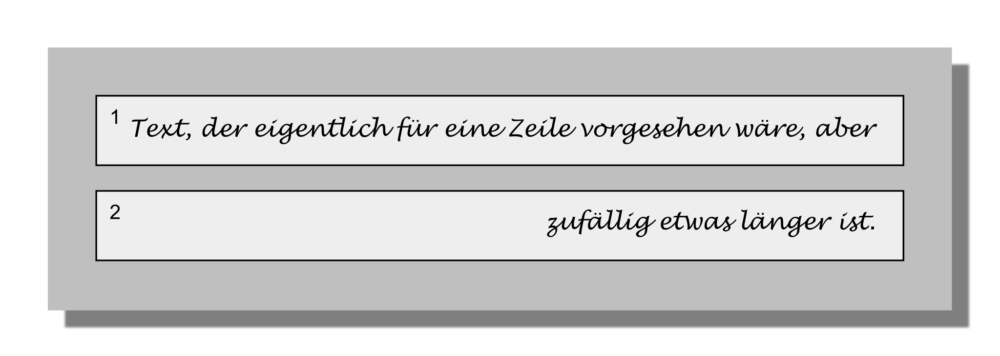
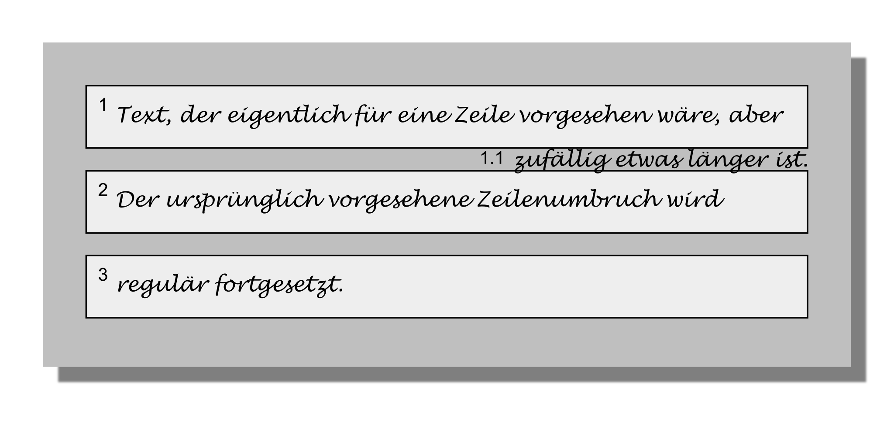
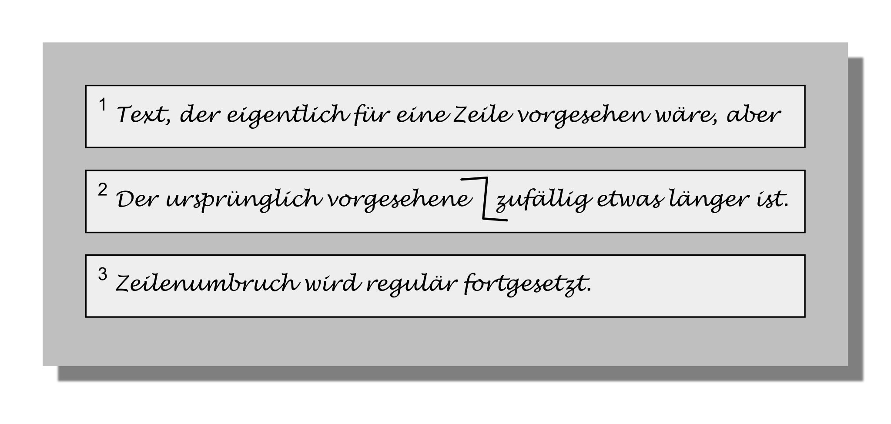
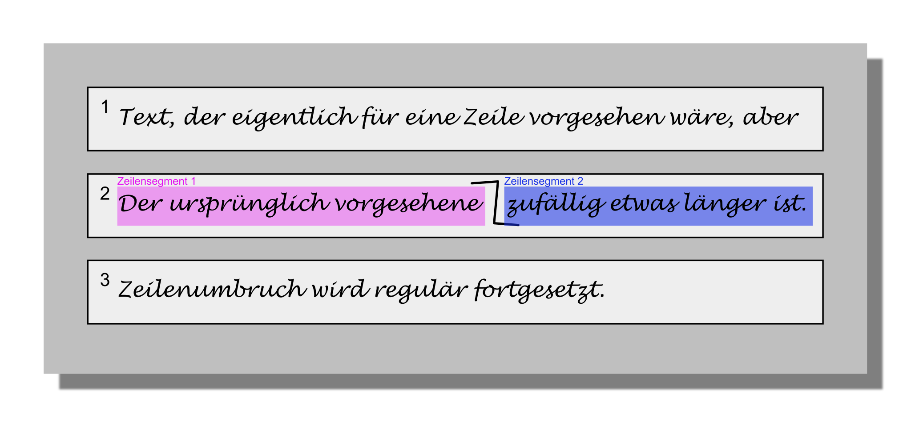

Erfassung visueller Strukturen des Textträgers
Die ›Quellenansicht‹ (source view) ist ein Visualisierungsmodus von ›heiEDITIONS‹, der strukturierte Erschließungsinformationen der Edition über die visuelle Beschaffenheit und Anordnung des materiell realisierten Inhalts einer Expression in einem physischen Träger für eine originalnahe Anzeige nutzt, die sich an Inhaltsflächen (in der Regel Seiten), Inhaltsbereichen (häufig Spalten) und Zeilen als primären strukturellen Einheiten orientiert. Die Quellenansicht kann nur erstellt werden, wenn in einem TEI-Dokument hinreichende Informationen über visuelle Strukturen einer physischen Vorlage erfasst werden; ist das nicht der Fall, kann ›heiEDITIONS‹ aus einem TEI-Dokument immer noch eine ›Leseansicht‹ (reading view) erstellen, die sich an semantisch-logischen Strukturen des TEI-Dokuments orientiert (Inhalt von <text>). Eine Leseansicht kann aber sinnvollerweise auch parallel zu einer Quellenansicht angeboten werden.
Ein TEI-Dokument, das die Expression eines Werkes abbildet, kann also gleichzeitig auch bestimmte Strukturen eines physischen Trägers erfassen, in dem sich die Expression manifestiert und verkörpert und der als Vorlage für die im TEI-Dokument erarbeitete Edition fungiert. Wenn das der Fall ist, muss das TEI-Dokument unterhalb des Wurzelelements <TEI> neben <teiHeader> und <text> zusätzlich das Element <facsimile> <facsimile> enthalten (s. weiter unten . Ist kein Element <facsimile> vorhanden, wird davon ausgegangen, dass das TEI-Dokument keinen physischen Textträger dokumentiert; der Inhalt von <text> wird dann als eine Instanz der Klasse betrachtet. 1)
Selbst dann, wenn ein TEI-Dokument mehrere Expressionen wiedergibt (wenn das Element <text> als fungiert, vgl. ) und wenn gleichzeitig die Erfassung der Strukturen des physischen Trägers angestrebt wird, müssen diese Expressionen einem einzigen physischen Träger entstammen. Eine Ausnahme bilden nur solche Fälle, in denen das ursprüngliche Trägerartefakt aufgeteilt wurde und heute disloziert, unter unterschiedlichen Signaturen und ggf. an verschiedenen Orten, aufbewahrt wird. Dann wird aber der ursprüngliche Träger als eine virtuelle Einheit und in Bezug zur Expression als ihr einziger Zeuge betrachtet.
Wenn ein TEI-Dokument nur einen Teil einer Expression enthält, weil die Expression wegen ihrer Länge auf mehrere TEI-Dokumente aufgeteilt wurde (dann fungiert das Element <text> als , vgl. ), wird ein Element <facsimile> im übergeordneten TEI-Dokument erwartet, in dem die in mehrere Teildokumente aufgeteilte Expression zusammengeführt wird.
Jedenfalls gilt grundsätzlich das Prinzip, dass sich punktuelle Marker innerhalb von <text>, mit denen Seiten-, Spalten-, Zeilenanfäge u. Ä. kenntlich gemacht werden (u. a. <pb>, <cb>, <lb>), nur auf physische Strukturen eines einzigen Trägerartefakts beziehen. Die visuellen Strukturen der Inhaltsbereiche (meist Spalten) einzelner Seiten sind ihrer physischen Abfolge nach in <facsimile> deklariert. Wenn in einem TEI-Dokument Inhalte eines textkritischen Apparats verwaltet werden, in dem Lesarten mehrerer Textzeugen angegeben werden, können die Lesartenangaben keine strukturierten Informationen über visuelle Strukturen anderer Textzeugen mitführen. Ein TEI-Dokument kann maximal einen physischen Träger strukturell beschreiben.
Die separate Deklaration der visuellen Struktureinheiten des Inhaltsträgers in <facsimile> ist erforderlich, weil der Inhalt in <text> nach editorischen Gesichtspunkten und aus inhaltlicher Perspektive angeordnet ist und nicht zwingend mit der Abfolge visueller Strukturen des Inhaltsträgers übereinstimmt. Der Inhalt von <text> wird vom Herausgeber so aufbereitet, dass er eine sinnvoll zu lesende Einheit ergibt. Dabei kann es durchaus zu Umstellungen gegenüber der Abfolge des physischen Trägers kommen.
Basiert der Text eines TEI-Dokuments auf einem physischen Träger, ist dieser Träger auch innerhalb des <teiHeader> (und darin: <fileDesc>) in <sourceDesc> anzugeben. <sourceDesc> sollte entweder genau ein Kindelement haben (<msDesc> oder <bibl>), das allein den einen physischen Träger beschreibt, oder mit <listWit> eine Textzeugenliste beinhalten. Letzteres ist nur dann zu wählen, wenn die Edition einen textkritischen Apparat vorsieht, der Lesarten aus anderen Textzeugen als der einen physischen Vorlage angibt. 2) Einer der als <witness> in <listWit> angegebenen Textzeugen muss dann als die physische Vorlage des Textes gekennzeichnet werden. Dies erfolgt mit der Angabe hc:ExemplarDescription an @ana. 3)
Faksimile-Deklaration
Das Element <facsimile> mit der Deklaration visueller Strukturen des Inhaltsträgers wird auf oberster Dokumentebene zwischen <teiHeader> und <text> platziert:
<TEI xmlns="http://www.tei-c.org/ns/Examples">
<teiHeader>[…]</teiHeader>
<facsimile>[…]</facsimile>
<text>[…]</text>
</TEI>
Die beiden wichtigsten Elemente für die Deklaration physischer Strukturen des Inhaltsträgers in <facsimile> sind:
- <surface> ( ›Inhaltsfläche‹ ) Zweidimensionale Fläche mit einem Inhalt, der in einem oder mehreren Inhaltsbereichen auf der Inhaltsfläche platziert ist. Die strukturelle Beschreibung einer solchen Fläche ist durch Koordinaten oder mit einem Layoutsystem möglich. (Für die Definition der TEI s. ↪ TEI.)
- @anagibt die Art der Inhaltsfläche an.
- @n( ›Bezeichner‹ ) gibt einen eindeutigen Bezeichner für die Inhaltsfläche an.
- @xml:id( ›ID‹ ) gibt einen eindeutigen technischen Identifier für die Inhaltsfläche an.
- <zone> ( ›Bereich‹; ›Zone‹ ) Ein beliebiger zweidimensionaler Bereich innerhalb einer Inhaltsfläche. (Für die Definition der TEI s. ↪ TEI.)
- @anagibt die Art des Bereichs an.
- @n( ›Bezeichner‹ ) gibt einen eindeutigen Bezeichner für den Bereich an.
- @xml:id( ›ID‹ ) gibt einen eindeutigen technischen Identifier für den Bereich an.
- @rendition( ›Wiedergabe‹ ) gibt die Art des Bereichs hinsichtlich seiner visuellen Umsetzung an.
- @hei:width( ›Breite‹ ) gibt die relative Breite des Bereichs in Prozentanteilen an.
- @rotate»gibt das Ausmaß der Drehung (im Uhrzeigersinn) dieser <zone> an. Als Bezugspunkt gilt dabei die natürliche Ausrichtung des <surface>-Elternelements, die entweder im <msDesc>-Element beschrieben ist oder durch die Koordinaten des <surface>-Elements selbst. Die Drehung wird in Bogengrad angegeben. « (↪ TEI)
Im Element <facsimile> wird zunächst für jede Seite, zu der innerhalb von <text> ein Inhalt erfasst wird, ein Element <surface> angelegt. Die Reihenfolge der <surface>-Elemente kann sich an der Reihenfolge in der Präsentation des Digitalisats (an der UB Heidelberg die Reihenfolge in DWork) orientieren, muss es aber nicht notwendigerweise. Es ergibt sich also die folgende Struktur für die inhaltstragenden Seiten des Dokuments:
Hier wird etw<am>.</am><ex>as</ex> abgekürzt.Seiten, die keinen Inhalt tragen, der mit TEI-Mitteln erfasst würde (Texte oder Bilder), erhalten in der Regel kein eigenes <surface>. Falls doch, bleibt der TEI-Inhalt solcher Seiten ohnehin leer.
Angaben zu Inhaltsflächen
<surface>/@ana Die Art der von <surface> repräsentierten Inhaltsfläche wird an @ana angegeben, in der Regel handelt es sich dabei um eine Seite (hc:Page).
Andere vorgesehenen Typen von Inhaltsflächen sind:
<surface>/@n Der Wert des Attributs @n wird als Seitenbezeichner in der Visualisierung angezeigt. Er enthält meist eine Nummer, bei mittelalterlichen Handschriften häufig zusätzlich mit ›r‹ oder ›v‹ (für recto bzw. verso). Möglich sind aber auch verbale Bezeichner wie Vorderdeckel oder Nummern mit Zusätzen wie Buchstaben oder Sternchen, z. B. 4a oder 1*, oder auch Kombinationen solcher Muster.4)
<surface>/@xml:id Der Wert des Attributs @xml:id ist vom Herausgeber grundsätzlich frei wählbar. Wir empfehlen eine Syntax, die dem für @n gewählten Seitenbezeichner einen Identifier für den Inhaltsträger bzw. Textzeugen voranstellt, getrennt durch einen Unterstrich, z. B. cpg389_4r oder A_4r.5)
Eine typische Abfolge der <surface>-Elemente mit ihren Attributen wäre z. B.:
<facsimile xmlns="http://www.tei-c.org/ns/Examples">
<surface ana="hc:Page" xml:id="G_1r" n="1r">[…]</surface>
<surface ana="hc:Page" xml:id="G_1v" n="1v">[…]</surface>
<surface ana="hc:Page" xml:id="G_2r" n="2r">[…]</surface>
</facsimile>
Verknüpfung zum Digitalisat Das Element <surface> trägt als erstes Kindelement das Element <graphic>, das die Verknüpfung zu einer digitalen Abbildung der Inhaltsfläche herstellt:
- <graphic> ( ›Abbildung‹ ) Strukturierte Angabe der Verknüpfung zu einer digitalen Abbildung des visuellen Objekts, dessen Inhalt durch das Elternelement repräsentiert, dokumentiert und erschlossen wird. (Für die Definition der TEI s. ↪ TEI.)
- @url( ›URL‹ ) gibt die URL einer digitalen Abbildung an.
- @mimeTypegibt den Medientyp des verknüpften Bildes als MIME media type an.
<facsimile xmlns="http://www.tei-c.org/ns/Examples">
<surface ana="hc:Page" xml:id="wm001_1" n="1">
<graphic url="https://digi.ub.uni-heidelberg.de/diglit/wm001/0001" mimeType="image/*"/>
[…]
</surface>
</facsimile>
Angaben zu Typen von Inhaltsbereichen
Auf einer Inhaltsfläche () sind einzelne Inhalte in Inhaltsbereichen () untergebracht. Inhaltsbereiche werden <zone>-Elemente repräsentiert, die in <facsimile> entweder direkt als Kindelemente innerhalb von <surface> oder innerhalb eines übergeordneten <zone> stehen. Ein Element <zone>, das seinerseits kein Kindelement <zone> enthält, ist ein Inhaltsbereich (von Ausnahmen bei Hilfsbereichen – – abgesehen).
<zone>/@ana Je nach Inhaltstyp werden in ›heiEDITIONS‹ folgende Kategorien von Inhaltsbereichen unterschieden, die jeweils an @ana anzugeben sind:
In einem einfachen Fall, wenn sich auf einer Seite ein einziger Textbereich befindet, könnte dies innerhalb von <facsimile> auf folgende Weise deklariert werden:

Abb. 1: Eine Seite mit einem einzigen, nicht näher beschriebenen Textbereich.
<surface xmlns="http://www.tei-c.org/ns/Examples" ana="hc:Page" xml:id="Ex_1r" n="1r">
<graphic url="https://digi.ub.uni-heidelberg.de/diglit/ex001/0001" mimeType="image/*"/>
<zone ana="hc:TextZone" xml:id="Ex_1r-a"/>
</surface>
Layouterfassung
Wenn auf einer Inhaltsfläche mehrere Inhaltsbereiche vorkommen, die in einer bestimmten Anordnung zueinander stehen, bietet ›heiEDITIONS‹ die Möglichkeit, ohne Rückgriff auf explizite Koordinatenangaben das Layout mithilfe rechteckiger horizontaler und vertikaler Container grob zu beschreiben. Dazu dienen <zone>-Elemente innerhalb von <surface>, die als übergeordnete Container einzelne Inhaltsbereiche gruppieren. Eine solche Deklaration des Layouts kann direkt für die Visualisierung in der Quellenansicht nachgenutzt werden.6)
Ohne eine Deklaration des Layouts mithilfe übergeordneter <zone>-Elemente werden die ggf. direkt auf Kindebene von <surface> platzierten und einzelne Inhaltsbereiche repräsentierenden <zone>-Elemente als vertikal übereinander stehend verstanden und entsprechend verarbeitet. Diese einfache Struktur kann (und soll) verwendet werden, wenn sich tatsächlich innerhalb einer Inhaltsfläche mehrere Inhaltsbereiche vertikal übereinander befinden und keine weiteren Informationen zu ihrer Anordnung (etwa zur Ausrichtung) angegeben werden sollen. So könnte eine Seite mit einem Textbereich und einem darunter befindlichen Bildbereich wie folgt beschrieben werden:

Abb. 2: Eine Seite mit einem Textbereich und einem Bildbereich darunter.
<surface xmlns="http://www.tei-c.org/ns/Examples" ana="hc:Page" xml:id="Ex_1v" n="1v">
<graphic url="https://digi.ub.uni-heidelberg.de/diglit/ex001/0002" mimeType="image/*"/>
<zone ana="hc:TextZone" xml:id="Ex_1v-1"/>
<zone ana="hc:ImageZone" xml:id="Ex_1v-2"/>
</surface>
Komplexere Anordnungen lassen sich mit horizontalen und vertikalen Containern beschreiben, die mit <zone> des Typs bzw. kodiert werden.
Die Beschreibung einer Seite mit zwei Textbereichen nebeneinander demonstriert das folgende Beispiel. Hier dient das übergeordnete <zone> als Container für die Gruppierung und richtige Anordnung der beiden Textbereiche. Erst die beiden Textbereiche sind jeweils Inhaltsbereiche (). Auf eine mögliche Bezeichnung der beiden Textbereiche als ›Spalten‹ wird hier übrigens noch verzichtet, vgl. dazu unten den Abschnitt .

Abb. 3: Eine Seite mit zwei Textbereichen nebeneinander.
<surface xmlns="http://www.tei-c.org/ns/Examples" ana="hc:Page" xml:id="Ex_2r" n="2r">
<graphic url="https://digi.ub.uni-heidelberg.de/diglit/ex001/0003" mimeType="image/*"/>
<zone ana="hc:HorizontalLayout">
<zone ana="hc:TextZone" xml:id="Ex_2r-1"/>
<zone ana="hc:TextZone" xml:id="Ex_2r-2"/>
</zone>
</surface>
Das Attribut @hei:width am Kindelement eines Containers macht es möglich, mit Prozentangaben die relative Breite eines Bereichs in Bezug zur Breite seines übergeordneten Containers anzugeben. Die Summer aller Breitenangaben an Kindelementen eines horizontalen Containers darf nicht 100 überschreiten (bei einem vertikalen Container ist das denkbar, da sich die Breitenangabe dann auf die Ausdehnung entlang der Querachse bezieht).7)

Abb. 4: Eine Seite mit zwei unterschiedlich breiten Textbereichen nebeneinander.
<surface xmlns="http://www.tei-c.org/ns/Examples" ana="hc:Page" xml:id="Ex_2v" n="2v">
<graphic url="https://digi.ub.uni-heidelberg.de/diglit/ex001/0004" mimeType="image/*"/>
<zone ana="hc:HorizontalLayout">
<zone ana="hc:TextZone" xml:id="Ex_2v-1" hei:width="33%"/>
<zone ana="hc:TextZone" xml:id="Ex_2v-2" hei:width="66%"/>
</zone>
</surface>
Eine explizite Angabe der relativen Höhe eines Bereichs ist nicht vorgesehen.8)
Durch die Kombination eines horizontalen Containers mit einem nachfolgenden direkten Kindelement von <surface> ist es beispielsweise möglich, ein Layout zu beschreiben, bei dem zwei Textbereiche nebeneinander stehen und unter ihnen beiden sich ein dritter Textbereich befindet, wie das folgende Beispiel vorführt.

Abb. 5: Eine Seite mit zwei Textbereichen nebeneinander und einem dritten Textbereich unter ihnen.
<surface xmlns="http://www.tei-c.org/ns/Examples" ana="hc:Page" xml:id="Ex_3r" n="3r">
<graphic url="https://digi.ub.uni-heidelberg.de/diglit/ex001/0005" mimeType="image/*"/>
<zone ana="hc:HorizontalLayout">
<zone ana="hc:TextZone" xml:id="Ex_3r-1"/>
<zone ana="hc:TextZone" xml:id="Ex_3r-2"/>
</zone>
<zone ana="hc:TextZone" xml:id="Ex_3r-3"/>
</surface>
Bei den Beispielen auf Abb. 2 und 5 befinden sich auf oberster Ebene
Semistrukturelle Angaben zu Layout- und Inhaltsbereichen
Ergänzend zur Angabe des jeweiligen Inhaltstyps eines Inhaltsbereichs und zur strukturellen Beschreibung des Layouts mithilfe von Angaben zu einem Containertyp und dessen Ausrichtung an @ana und @rendition können <zone>-Elemente am Attribut @ana weitere ergänzende Angaben tragen, die ihre Stellung im Layoutsystem einer Inhaltsfläche beschreiben. Die Bereitstellung solcher Angaben und deren Präzision ist dem Ermessen des Herausgebers überlassen; wenn verwendet, sollten diese Angaben aber semantisch mit ›heiEDITIONS Concepts‹ konform sein.
Ergänzende Angaben zur Platzierung von Randbereichen
TODO
Verknüpfung zwischen Text und Faksimiledeklaration
TODO
Erfassung des Zeilenfalls
Die in ›heiEDITIONS‹ bereitgestellten Mittel machen es nicht nur möglich, visuelle Zeilenanfänge zu kennzeichnen und somit den groben Zeilenumbruch einer Quelle zu dokumentieren, sondern ermöglichen auch die präzise Erfassung von Zeilenüberläufen und auf Zeilensegmente verteilten parallelen Textströmen sowie Angaben zur Ausrichtung von Zeileninhalten und zur Positionierung von Zeilensegmenten.
Sofern in einem Editionsprojekt die ›Quellenansicht‹ erwünscht ist, ist eine Erfassung des Zeilenfalls nach den hier beschriebenen Grundsätzen erforderlich. Für die ›Leseansicht‹ allein ist sie hingegen verzichtbar.
Das hier vorgestellte Datenmodell für die Zeilenerfassung ist – zusammen mit den oben beschriebenen Grundsätzen zur Dokumentation von Layoutbereichen – u. a. auch unter Berücksichtigung der Kompatibilität mit OCR/HTR-Systemen entwickelt.
Grundsätzliches zur Zeilenerfassung
Die Zeile ist in der visuellen Strukturhierarchie einer inhaltstragenden Fläche unterhalb der Ebene von Inhaltsbereichen angesiedelt und ist in dieser Hierarchie ›von oben kommend‹ die erste Einheit, die direkt Textzeichen enthalten kann.
Zeilen sind die konstituierenden Komponenten von Textbereichen (), die in der Regel als unmittelbare Container für jeweils eine geordnete Sequenz von Zeilen fungieren.9)
Wenn das Digitalisat der Quelle (das inhaltstragende Artefakt) einer Expression nicht mithilfe von Koordinatenangaben segmentiert wird (typischerweise anhand eines OCR/HTR-Systems), sodass Koordinatenangaben in das TEI-Dokument integriert würden, sind innerhalb der Layoutdeklaration in <facsimile> keine Angaben zu Zeilen erforderlich. In der Arbeitskodierung werden lediglich im laufenden Text (innerhalb von <text>) punktuell die Zeilenanfänge mit <lb> markiert. Dabei ist für die Anordnung der Zeilen innerhalb eines Inhaltsbereichs die Nummerierung der <lb>-Elemente mit @n signifikant. Die so markierten Zeilen werden implizit auf den nächsten vorausgehenden, im Text mit <cb>, <milestone ana="hc:ZoneBeginning"> oder <milestone ana="hc:ZoneShift"> (s. oben ) angegebenen Inhaltsbereich bezogen und diesem zugewiesen.
Zeilenanfänge Nachdem also, wie oben unter beschrieben, jeweils der Anfang eines Inhaltsbereichs mit <cb> (bei Spaltenanfängen) oder <milestone ana="hc:ZoneBeginning"> (bei Anfängen sonstiger Inhaltsbereiche) gekennzeichnet worden ist (bzw. ggf. der Wechsel zurück in einen zuvor bereits einmal begonnenen Inhaltsbereich mittels <milestone ana="hc:ZoneShift"> deklariert worden ist), wird vor den Text jeder Zeile das Element <lb> (line beginning) gesetzt. Dieses Element ist immer leer, es muss jedoch das Attribut @n tragen.
<p xmlns="http://www.tei-c.org/ns/Examples">
<cb facs="#A_5-a"/>
<lb n="1"/>Text von Zeile 1
<lb n="2"/>Text von Zeile 2
<lb n="3"/>Text von Zeile 3
<lb n="4"/>Text von Zeile 4
<lb n="5"/>Text von Zeile 5
</p>
Im vorangehenden Beispiel befindet sich der Text mit jeweils markierten Zeilenanfängen in einem <p>, der Text der fünf Zeilen bildet also semantich-logisch einen Absatz als Sinneinheit. Die Verwendung semantisch-logischer Elemente (wie <p> oder <l>) bringt keine implizite Aussage über die Zeilenaufteilung mit sich, sie ersetzt nicht die Kennzeichnung eines Zeilenanfangs mit <lb>.
Es spielt jedoch keine Rolle, ob beim Zusammentreffen visueller Anfänge und der Anfänge von Sinneinheiten das eine oder andere zuerst gesetzt wird. Im vorliegenden Beispiel wird zunächst <p> als Sinneinheit geöffnet und innerhalb des <p> werden der Spaltenanfang under Zeilenanfang gesetzt. Genauso könnte aber auch das <cb> direkt vor dem <p> stehen; das <lb> für Zeile 1 könnte dann entweder am Anfang des <p> bleiben oder ebenfalls dem <p> vorangehen.10)
In einer Gedichtstrophe (<lg>) könnten – bei einer regelmäßigen Absetzung jedes Verses in der Quelle – die Zeilenanfänge einzelner Verse (<l>) so erfasst werden:
<lg xmlns="http://www.tei-c.org/ns/Examples">
<l>
<lb n="1"/>Text von Vers 1.
</l>
<l>
<lb n="2"/>Text von Vers 2.
</l>
<l>
<lb n="3"/>Text von Vers 3.
</l>
<l>
<lb n="4"/>Text von Vers 4.
</l>
<l>
<lb n="5"/>Text von Vers 5.
</l>
</lg>
Genauso möglich wäre aber stattdessen auch:
<lg xmlns="http://www.tei-c.org/ns/Examples">
<lb n="1"/>
<l>
Text von Vers 1.
</l>
<lb n="2"/>
<l>
Text von Vers 2.
</l>
<lb n="3"/>
<l>
Text von Vers 3.
</l>
<lb n="4"/>
<l>
Text von Vers 4.
</l>
<lb n="5"/>
<l>
Text von Vers 5.
</l>
</lg>
Die Insignifikanz der Position von Markern visueller Anfänge beim Zusammentreffen mit Anfängen von Sinneinheiten ergibt sich daraus, dass sie konzeptionell unterschiedliche ›Textdimensionen‹ eingrenzen, die zumindest technisch voneinander unabhänig sind. Da auf die Frage, ob zuerst ein Vers anfängt oder die Zeile, in der der Vers steht, keine eindeutige Antwort möglich ist, ist die Position der entsprechenden Elemente in ›heiEDITIONS‹ irrelevant. Von der Sache her verhält es sich am ehesten so, dass beides gleichzeitig anfängt, dies lässt jedoch mit XML/TEI nicht unmittelbar abbilden, da zwei XML-Elemente nicht dieselbe Position in einem XML-Dokument einnehmen können.11) Auch wenn die technische Abfolge der beiden Typen von Anfängen in einem TEI-Dokument also letztlich beliebig ist, empfiehlt sich jeweils projektspezifisch eine einheitliche Regelung.
Wie bei <pb>, <cb>, <milestone ana="hc:ZoneBeginning"> oder <milestone ana="hc:ZoneShift"> gilt auch für die Markierungen von Zeilenanfängen mit <lb>, dass Leeraum (Leerzeichen oder Zeilenumbruchzeichen im TEI-Code) davor und danach grundsätzlich insignifikant ist. Zur besseren Lesbarkeit kann also <lb> z. B. jeweils auf eine eigene Zeile gesetzt werden.
In tokenisierten Texten, in denen Leerzeichen explizit mit <c> erfasst werden, sollen am Zeilenende und am Zeilenanfang keine Leerzeichen angegeben werden. Es gilt das Prinzip: Eine Zeile fängt nie mit einem Leerzeichen an und endet auch nie mit einem Leerzeichen.
Zeilennummerierung Die Nummer im Wert des Attributs @n bezeichnet die Zeilennummer in der natürlichen Zeilenabfolge des jeweiligen Textbereichs. Die Nummer ist als solche signifikant und bestimmt die Position jeder Zeile in einem Textbereich (also in der Zeilensequenz innerhalb eines Textbereichs). Sofern Zeilen nicht in <facsimile> explizit deklariert sind, werden sie in der Verarbeitung des TEI-Dokuments für die ›Quellenansicht‹jeweils pro Textbereich nach dem nummerischen Wert von @n geordnet. Die Zeilennummerierung sollte also der tatsächlichen Abfolge der Zeilen innerhalb eines Textbereichs in der Quelle entsprechen und diese wiedergeben. Allerdings kommt es dabei nicht auf den absolten Zahlenwert an, sondern allein auf die nummeriche Abfolge. Das bedeutet praktisch, dass die Zeilenzählung nicht zwingend in jedem Inhaltsbereich neu bei Eins anfangen muss. Eine größere Zahl bedeutet eine spätere Position in einer Zeilensequenz. Die nummerischen Werte in @n sind nicht auf Ganzzahlen beschränkt. Unter Umständen, etwa bei Interlinearzeilen, kann es sinnvoll sein, mit einer sekundären Nummerierung zwischen als primär geltenden Zeilen zu arbeiten. In solchen Fällen können Dezimalzahlen mit Punkt als Dezimaltrennzeichen verwendet werden. Eine Zeile mit der Nummer 1.1 würde sich zwischen den Zeilen 1 und 2 befinden. Der relative Abstand einer Dezimalzahl von benachbarten Ganzzahlen (1,1 ist nummerisch näher an 1 als an 2) spielt dabei keine Rolle – allein die Position in der Zeilensequenz ist von Bedeutung.12)
Ein grundlegendes Prinzip ist, dass die Abfolge der <lb>-Elemente mit ihren den Quellenbefund wiedergebenden Zeilennummern in einem semantisch-logisch strukturierten TEI-Dokument nicht der Zeilenabfolge in der Quelle entsprechen muss. Die ›semantisch-logische Kodierung‹, die in ›heiEDITIONS‹ und auch sonst in der TEI-Community meist die primäre Kodierung ist und im Wesentlichen ebenfalls der Arbeitskodierung entspricht, gibt eine Expression in der Anordnung wieder, in der diese sinnvoll gelesen werden soll. Diese sinngemäße Leseanordnung weicht gelegentlich von der visuellen Anordnung in der Quelle ab. Meist sind Abweichungen in der Anordung am Wechsel zwischen Textbereichen festzumachen, etwa wenn der Textlauf von einer Spalte in eine Marginalie wechselt und danach wieder in der Spalte fortgesetzt wird. Gelegentlich kann aber auch innerhalb eines Textbereichs die visuelle Abfolge von der sinnvoll zu lesenden Abfolge abweichen. Zeilenüberläufe und quer zur Zeilenanordnung verlaufende parallele Textströme (s. u. ) sind die typischsten Phänomene dieser Art.
Grundsätzlich hindert einen Herausgeber nichts daran, die sinngemäße Leseabfolge des Textes völlig frei festzulegen und dabei Abweichungen von der visuellen Abfolge der Zeilen in der Quelle in Kauf zu nehmen. Das folgende Code-Beispiel führt einen solchen Vorgang vor:
<lg xmlns="http://www.tei-c.org/ns/Examples">
<l n="1">
<lb n="1"/>Text von Vers 1.
</l>
<l n="2">
<lb n="3"/>Text von Vers 2.
</l>
<l n="3">
<lb n="2"/>Text von Vers 3.
</l>
<l n="4">
<lb n="4"/>Text von Vers 4.
</l>
<l n="5">
<lb n="5"/>Text von Vers 5.
</l>
</lg>
Im vorangehenden Beispiel legt der Herausgeber fest (ohne hier auf mögliche Gründe für diese Entscheidung einzugehen), dass der Text auf Zeile 3 der Quelle als Vers 2 zu lesen ist. Die ›Leseansicht‹ von ›heiEDITIONS‹ wird diese vom Herausgeber festgelegte Reihenfolge, die in der Dokumentreihenfolge der semantisch-logischen Kodierung ihren Ausdruck findet, respektieren. Die ›Quellenansicht‹ hingegen, die den visuellen Befund der Quelle reproduziert, wird den Text entsprechend der Nummerierung an <lb> Zeile für Zeile so ausgeben, wie es dem Befund in der Quelle entspricht.
Entscheidend für diese vom Herausgeber festzulegende Leseabfolge ist die Dokumentreihenfolge der Arbeitskodierung, also die Reihenfolge im geordneten Baum des XML-Dokuments bzw. die Zeichenreihenfolge der Datei. Keine wesentliche Rolle spielt dabei hingegen eine etwaige Nummerierung der Sinneinheiten, z. B. der Verse (<l>) im letzten Code-Beispiel. Die explizite Nummerierung von Sinneinheiten mit @n kann ganz anderen Zwecken dienen als der Festlegung der Leseanordnung (etwa projektspezifisch der Korrelation mit einer älteren Ausgabe). Wenn der Herausgeber die Versnummerierung mit @n mit einer anderen Bedeutung als der Leseanordnung belegt, könnte das letzte Beispiel auch wie folgt aussehen, ohne dass sich an der Lesereihenfolge etwas ändern würde:
<lg xmlns="http://www.tei-c.org/ns/Examples">
<l n="1">
<lb n="1"/>Text von Vers 1.
</l>
<l n="2">
<lb n="3"/>Text von Vers 2.
</l>
<l n="5">
<lb n="2"/>Text von Vers 5.
</l>
<l n="4">
<lb n="4"/>Text von Vers 4.
</l>
<l n="3">
<lb n="5"/>Text von Vers 3.
</l>
</lg>
Worttrennung
@breakDie Zeilengrenzen entsprechen bekanntlich nicht immer den Wortgrenzen. Mit @break stellt die TEI ein einfaches Mittel zur Verfügung, mit dem ausgedrückt werden kann, ob ein Zeilenanfang gleichzeitig auch mit dem Anfang eines Tokens zusammenfällt, also ob die Zeilengrenze gleichzeitig auch eine Tokengrenze ist. Mit <lb break="no"> kann ausgedrückt werden, dass es sich um keine Tokengrenze handelt, dass der betroffene Zeilenanfang also mitten in einem Wort liegt.
<p xmlns="http://www.tei-c.org/ns/Examples">
<lb n="2"/> […] hell und festlich, ganz frevelhaft unkirchlich scheint eine
<lb n="3"/>warme Frühlingssonne am Karfreitag, wo sie eigentlich von den Sonnenschie
<lb n="4" break="no"/>bern mit schwarzem Flore verbrämt werden müsste, und auch ich Heide sehe
<lb n="5"/>nicht ein, wozu sie scheint. Sie kann doch nur üble Dünste aus den Feldern,
<lb n="6"/>die nicht die Frucht des Friedens tragen können, brüten, und was bescheint
<lb n="7"/>sie anders, als eine Fülle Menschen in nichts weniger als festlicher
<lb n="8"/>Stimmung, nichts weniger als festlicher Beschäftigung. Ich habe zwar fei
<lb n="9" break="no"/>erlich genug eine Stunde in meinem Sophokles gelesen […]
</p>
Im vorangehenden Beispiel steht jede Zeilenanfang-Markierung auf einer eigenen Zeile, auch Zeilenanfänge, die sich mitten im Wort befinden und mit <lb break="no"> gekennzeichnet sind. Wie bereits mehrfach erwähnt, gelten Leerzeichen vor und nach einem Zeilenanfang als insignifikant – das gilt auch mitten im Wort. Die in der Quelle vorhandenen Trennstriche sind in diesem Beispiel nicht explizit erfasst (zur expliziten Erfassung von Trennstrichen und ähnlichen Trennzeichen s. TODO).
Selbstverständlich besteht in nicht explizit und vollständig tokenisierten Texten wie beim vorangehenden Beispiel keine Sicherheit, dass Leerzeichen mitten in der Zeile immer zuverlässig die linguistisch korrekte Wortgrenze markieren. Der Aussagewert von @break beschränkt sich nur auf Wortgrenzen am Zeilenende bzw. Zeilenanfang.
In tokenisierten Texten, in denen jedes Wort mit <w> markiert ist (zur Tokenisierung s. TODO), muss an <lb>-Elementen innerhalb eines Wortes @break nicht händisch gesetzt werden. Wenn es fehlt, wird es während der Verarbeitung ergänzt.
Zeilensegmente
Zwischen den visuellen Gliederungsebenen der Zeilen und der Zeichen bzw. Glyphen kann bei Bedarf zusätzlich die Ebene der Zeilensegmente angesetzt werden.13)
Grundsätzlich kann jede Zeile beliebig in Zeilensegmente unterteilt werden. Ähnlich wie bei Zeilenanfängen wird in der Arbeitskodierung und in der semantisch-logischen Kodierung nur der Anfang eines Zeilensegments punktuell gekennzeichnet, und zwar mit <milestone ana="hc:LineSegmentBeginning">.

Abb. 15: Eine Zeile mit drei Zeilensegmenten.
Der Text einer Zeile mit der in der vorangehenden Abbildung skizzierten Struktur würde (etwa innerhalb eines Absatzes) wie folgt kodiert:
<p xmlns="http://www.tei-c.org/ns/Examples">
[…]
<lb n="3"/>
<milestone ana="hc:LineSegmentBeginning" n="1"/>
Text von Zeilensegment 1
<milestone ana="hc:LineSegmentBeginning" n="2"/>
Text von Zeilensegment 2
<milestone ana="hc:LineSegmentBeginning" n="3"/>
Text von Zeilensegment 3
[…]
</p>
Wenn dem jeweils ersten Zeilensegment in einer Zeile keine weiteren Informationen beigegeben werden sollen, kann auf die explizite Deklaration des entsprechenden Zeilensegmentanfangs verzichtet werden:
<p xmlns="http://www.tei-c.org/ns/Examples">
[…]
<lb n="3"/>
Text von Zeilensegment 1
<milestone ana="hc:LineSegmentBeginning" n="2"/>
Text von Zeilensegment 2
<milestone ana="hc:LineSegmentBeginning" n="3"/>
Text von Zeilensegment 3
[…]
</p>
@hei:belongsToLine Bei der Verwendung von Zeilensegmenten für die beiden zuletzt genannten Zwecke kann es erforderlich sein, bei Zeilensegmenten (mit Ausnahme des jeweils ersten Zeilensegments, dessen Anfang praktisch mit dem Zeilenbeginn zusammenfällt) ihre jeweilige Zugehörigkeit zu einer Zeile explizit anzugeben, und zwar immer dann, wenn das Zeilensegment einer anderen Zeile als derjenigen angehört, deren Anfang mit dem nächsten vorausgehenden <lb> markiert ist. Diese Aufgabe übernimmt das Attribut @hei:belongsToLine. Dieses Attribut mit dem Datentyp teidata.text erwartet Werte, die mit der Zeilennummerangabe in @n am zugehörigen <lb> übereinstimmen müssen, normalerweise also einfach die Nummer der zugehörigen Zeile.14) Näheres und Beispiele sind den folgenden Abschnitten zu entnehmen.
Ausrichtung und Abstände
Eine Zeile ist ein visueller Gegenstand, der normalerweise in einen größeren visuellen Kontext (einer Inhaltsfläche und eines Inhaltsbereichs) eingebettet ist und zu anderen visuellen Objekten in einer Beziehung steht. In ›heiEDITIONS‹ wird angenommen, dass Zeilen in der Regel in einem Textbereich eine geordnete und gerichtete Sequenz bilden (wobei es natürlich auch Textbereiche mit einer einzigen Zeile geben kann) und dass diese Zeilensequenz den Textbereich konstituiert.
›heiEDITIONS‹ unterstützt bei Zeilen und Zeilensegmenten grundsätzlich die Erfassung zweier Arten visueller Bezüge:
- visuelle Bezüge von Zeilen oder Zeilensegmenten untereinander, jeweils zum nächsten vorausgehenden oder nachfolgenden Geschwistergegenstand
- visuelle Bezüge von Zeilen oder Zeilensegmenten zu ihrem Elterngegenstand (Inhaltsbereich oder Zeile), also zu den Rändern ihres direkt übergeordneten Containers
Die im folgenden beschriebenen Mechanismen sind unterschiedlich mächtig und dementsprechend auch unterschiedlich komplex. Sie dienen in erster Linie der Beschreibung der visuellen Strukturen der Quelle, nicht etwa als Formatierungsanweisungen für editorische Sekundärtexte. Die Visualisierung der ›Quellenansicht‹ von ›heiEDITIONS‹ unterstützt die hier beschriebenen Konstrukte nur eingeschränkt durch direkte visuelle Nachbildung.
Einrückungen & Ausrückungen Häufig zu erfassende Phänomene bei der visuellen Erscheinung von Zeilen sind auf horizontaler Achse Einrückungen und Ausrückungen sowie auf vertikaler Achse Abstände nach oben und unten.15) Zur einfachen Dokumentation von Einrückungen und Ausrückungen können an <lb> bzw. <milestone ana="hc:LineSegmentBeginning"> jeweils mit dem Attribut @rendition diese Angaben gemacht werden:
Die Zuweisung der aufgeführten Typen zu einer Zeile oder einem Zeilensegment drückt nur aus, dass eine Einrückung oder Ausrückung vorliegt, nicht etwa wie groß diese ist. Für die genauere Erfassung der Ausdehnung einer Einrückung oder Ausrückung s. weiter unten (TODO).
vertikale Absetzung Zur Erfassung der vertikalen Absetzung bzw. von vertikalen Freiräumen oberhalb oder unterhalb einer Zeile können an <lb> mit dem Attribut @rendition diese Angaben gemacht werden:
Wie bei den zuvor beschriebenen einfachen Angaben für Einrückungen und Ausrückungen sind auch diese Mittel zur Angabe vertikaler Absetzung nur für einfache ›Pauschalangaben‹ bestimmt, also für Projekte und Fälle, in denen die Erfassung der Größe der Absetzung irrelevant ist. Für die genauere Erfassung der Ausdehnung vertikaler Absetzungen s. weiter unten (TODO).
Ausrichtung Des weiteren besteht häufig der Bedarf, bei Zeilen die Gesamtausrichtung ihrer Inhalte zu erfassen, also die Information, ob die Inhalte – normalerweise der textuelle Inhalt – der Zeile linksbündig, rechtsbündig oder zentriert erscheinen. Dafür kann an <lb> mit dem Attribut @rendition eine der folgenden drei Angaben gemacht werden:
Die Angaben , und beziehen sich jeweils ›global‹ auf sämtliche Inhalte einer Zeile (bzw. anders betrachtet auf die ganze Zeile als Einheit).
Selbstausrichtung Wenn es erforderlich ist, die Ausrichtung zu Segmenten innerhalb einer Zeile anzugeben, etwa bei tabulatorbedingten Strukturen innerhalb einer Zeile oder bei Zeilenüberhängen (s. u.), können an <milestone ana="hc:LineSegmentBeginning"> mit @rendition die folgenden Angaben gemacht werden:
TODOs: Beispiele für tabulatorähnliche Strukturen; Offset-Attribute für präzise Erfassung von Abständen; Verwendung des Elements <rendition> für die Bündelung von Layoutangaben an Zeilen und Zeilensegmenten.
Zeilensegmente beim Wechsel des Textstroms zwischen Textbereichen
TODO
Zeilenüberläufe und quer zu Zeilen verlaufende Textströme
Ein Zeilenüberlauf liegt vor, wenn der textuelle Inhalt, der ursprünglich für eine Zeile vorgesehen worden wäre, nicht vollständig auf diese Zeile passt, sodass der ›überschüssige‹ Text andernorts auf eine Weise untergebracht wird, die sich von einer regulären Fortsetzung des Textes auf der nächsten Zeile unterscheidet. Die Abweichung von einer regulären Fortsetzung lässt sich in der Regel mindestens daran erkennen, dass der fortgesetzte Text nicht am normalen visuellen Anfang der nächsten Zeile begonnen wird, wie es im Vergleich mit dem visuellen Kontext erwartbar wäre. Zeilenüberlauf kommt insbesondere dann vor, wenn Sinneinheiten wie Verse oder Listeneinträge normalerweise regelmäßig jeweils auf eigene Zeilen gesetzt werden, also wenn der Zeilenumbruch im Wesentlichen die Grenzen der Sinneinheiten nachbilden soll.
Die außerordentliche Unterbringung des überschüssigen Textes kann oberhalb und unterhalb einer regulären Zeile erfolgen, und zwar grundsätzlich (mindestens) auf viererlei Weise:
- Fortsetzung in einer regulär im Layout vorgesehenen nächsten freien Zeile, aber ausgerichtet am regulären Ende der Zeile (in diesem Fall handelt es sich immer um eine Zeile darunter)
- Fortsetzung in einer regulär im Layout vorgesehenen nächsten freien Zeile, in einem freigelassenen Abstand vom sonstigen regulären Zeilenbeginn (auch in diesem Fall handelt es sich immer um eine Zeile darunter)
- Fortsetzung in einer zwischen die regulär im Layout vorgesehenen Zeilen nachträglich eingeschobenen Zwischenzeile (oberhalb oder unterhalb)
- Fortsetzung in einem Segment einer regulär im Layout vorgesehenen Zeile (oberhalb oder unterhalb), die gleichzeitig weiterhin für ihren regulär vorgesehenen Inhalt in Anspruch genommen wird
Die nachfolgende Abbildung veranschaulicht zunächst einen Fall, bei dem nicht von einem Zeilenüberlauf die Rede sein kann, da die Fortsetzung des überschüssigen Textes trotz der etwaigen ursprünglichen Absicht, den Text in einer einzigen Zeile unterzubringen, dennoch regulär in der nächsten Zeile erfolgt:

Abb. 16: Kein Zeilenüberlauf.
Die folgende Abbildung verdeutlicht die Situation, in der überschüssiger Text in der nächsten regulären Zeile darunter fortgesetzt wird, aber rechtsbündig:
Abb. 17: Zeilenüberlauf rechtsbündig in der nächsten regulären Zeile.
Um den Zeilenüberlauf als solchen zu markieren, wird das <lb> der Zeile, die den überschüssigen Text aufnimmt, an @ana als gekennzeichnet. Die rechtsbündige Ausrichtung des Zeileninhalts wird an @rendition mit angegeben:
<p xmlns="http://www.tei-c.org/ns/Examples">
[…]
<lb n="1"/>Text, der eigentlich für eine Zeile vorgesehen wäre, aber
<lb n="2" ana="hc:RunOverBelow" rendition="hc:FlushRight"/>zufällig etwas länger ist.
[…]
</p>
Grundsätzlich sind für die Kennzeichnung von Zeilenüberläufen diese beiden Typen vorgesehen, die mit dem Attribut @ana an <lb> und <milestone ana="hc:LineSegmentBeginning"> angegeben werden können:
Wenn in der nächsten regulären Zeile, die den überschüssigen Text als Zeilenüberlauf aufnimmt, der Zeilenüberlauf als solcher visuell durch eine Absetzung oder Einrückung kenntlich gemacht wird, verfährt man ähnlich wie im vorausgehenden Fall, nur wird am entsprechenden <lb> statt der rechtbündigen Ausrichtung die Einrückung angegeben:

Abb. 18: Zeilenüberlauf, markiert durch Einrückung in der nächsten regulären Zeile.
<p xmlns="http://www.tei-c.org/ns/Examples">
[…]
<lb n="1"/>Text, der eigentlich für eine Zeile vorgesehen wäre, aber
<lb n="2" ana="hc:RunOverBelow" rendition="hc:LeftIndent"/>zufällig etwas länger ist.
[…]
</p>
Wenn der Text des Zeilenüberlaufs zwischen den regulären Zeilen platziert wird, damit der folgende Textabschnitt auf der nächsten regulären Zeile fortgesetzt werden kann, gilt die zusätzliche Zeile zwischen den Zeilen ebenfalls als eine eigenständige Zeile, und zwar als Zeile des Typs . Bei dieser Zeile sollte durch das Attribut @n sichergestellt werden, dass sie richtig eingeordnet werden kann (vgl. oben ). Im Übrigen folgt die Kodierung aber den bereits erläuterten Prinzipien:
Abb. 19: Zeilenüberlauf in einer rechtsbündig ausgerichteten Interlinearzeile.
<p xmlns="http://www.tei-c.org/ns/Examples">
[…]
<lb n="1"/>Text, der eigentlich für eine Zeile vorgesehen wäre, aber
<lb n="1.1" ana="hc:InterlinearLine hc:RunOverBelow" rendition="hc:FlushRight"/>zufällig etwas länger ist.
<lb n="2"/>Der ursprünglich vorgesehene Zeilenumbruch wird
<lb n="3"/>regulär fortgesetzt.
[…]
</p>
Schließlich kommt der Fall vor, dass der Zeilenüberlauf in einem Segment einer anderen, häufig der nächsten vorausgehenden oder nachfolgenden regulären Zeile untergebracht wird, ohne dass eine solche Zeile für den Zeilenüberlauf ganz freigegeben würde – vielmehr wird eine solche Zeile gemäß der regulär vorgesehenen Verteilung des Inhalts genutzt, bei bereits zuvor geschriebenen Zeilen darüber natürlich ohne Rücksicht auf das Zeilensegment mit dem Zeilenüberlauf, bei Zeilen darunter mit mehr oder weniger Rücksicht.
Grundsätzlich muss hierbei strikt das Prinzip beherzigt werden, dass die Textabfolge in der Arbeitskodierung (und der semantisch-logischen Kodierung) immer die sinnvoll zu lesende Textabfolge sein muss. Der Text wird also so erfasst, wie er zu lesen ist. Der visuelle Wechsel des Textstroms in Teile anderer Zeilen als der direkt zuvor mit einem <lb> begonnenen erfolgt mithilfe des oben unter eingeführten Zeilensegment-Konstrukts. Hierbei muss zwingend das Attribut @hei:belongsToLine benutzt werden, denn das Zeilensegment mit dem Zeilenüberlauf befindet sich in diesen Fällen immer in einer anderen Zeile als der, die mit dem nächsten vorausgehenden <lb> deklariert wurde.
Abb. 20: Zeilenüberlauf in einem Segment der folgenden regulären Zeile.
<p xmlns="http://www.tei-c.org/ns/Examples">
[…]
<lb n="1"/>Text, der eigentlich für eine Zeile vorgesehen wäre, aber
<milestone ana="hc:LineSegmentBeginning hc:RunOverBelow" n="2" hei:belongsToLine="2"/>zufällig etwas länger ist.
<lb n="2"/>Der ursprünglich vorgesehene
<lb n="3"/>Zeilenumbruch wird regulär fortgesetzt.
[…]
</p>
Wie aus dem vorausgehenden Code-Beispiel ersichtlich ist, wird in diesem Fall nicht ein <lb>, sondern das <milestone ana="hc:LineSegmentBeginning"> an @ana mit der Typangabe gekennzeichnet. Der Grund dafür ist, dass in diesem Fall nicht eine Zeile als Ganzes, sondern ein Zeilensegment den Zeilenüberlauf darstellt.
Das Attribut @n an <milestone ana="hc:LineSegmentBeginning"> gibt die Nummer des Zeilensegments in der Zeile an, die den Zeilenüberlauf aufnimmt. Implizit versteht es sich, dass davor in der betroffenen Zeile ein Zeilensegment mit der Nummer 1 steht, dessen Anfang nicht explizit deklariert werden muss bzw. bereits durch das <lb> hinreichend markiert ist.16)
In der folgenden Abbildung sind die beiden Segmente von Zeile 2 des letzten Beispiels zur Verdeutlichung unterschiedlich eingefärbt und beschriftet:
Abb. 21: Zeilenüberlauf in einem Segment der folgenden regulären Zeile, mit eingefärbten Zeilensegmenten.
Im folgenden realen Beispiel befindet sich der Zeilenüberlauf in einem Zeilensegment zwei Zeilen höher. Das Beispiel veranschaulicht gleichzeitig den Umgang mit einem Zeilenüberlauf, dessen Anfang mitten in einem Wort liegt. Hierbei wird – wie auch sonst bei <lb> – das Attribut @break verwendet.

Abb. 22: Zeilenüberlauf in einem Zeilensegment zwei Zeilen höher (↪ Heidelberg, Universitätsbibliothek, Cod. Pal. germ. 367, fol. 3v).
<lg xmlns="http://www.tei-c.org/ns/Examples" ana="hc:Couplet">
<l n="417">
<lb n="24"/>
<hi rendition="hc:Versal">S</hi>under d<ex>er</ex> alleyne ot
</l>
<l n="418">
<lb n="25"/>
<hi rendition="hc:Versal">D</hi>er daz wachſin gebit got
</l>
</lg>
<lg xmlns="http://www.tei-c.org/ns/Examples" ana="hc:Couplet">
<l n="419">
<lb n="26"/>
<hi rendition="hc:Versal">D</hi>och ſal menſlich flis ſich we<milestone ana="hc:LineSegmentBeginning hc:RunOverAbove" n="2" hei:belongsToLine="24" break="no"/>gin
</l>
<l n="420">
<lb n="27"/>
<hi rendition="hc:Versal">D</hi>ar vf daz her ruche pflege<ex>n</ex>
</l>
</lg>
In tokenisierter Variante und mit Erfassung von Metamarken ergibt sich beim selben Beispiel der folgende Code, in dem @break weggelassen wurde kann, da sich aus der expliziten Tokenisierung die Information ergibt, dass der Anfang des Zeilenüberlaufs mitten im Wort liegt:
<lg xmlns="http://www.tei-c.org/ns/Examples" ana="hc:Couplet">
<l n="417">
<lb n="24"/>
<w><hi rendition="hc:Versal">S</hi>under</w>
<c> </c>
<w>d<ex>er</ex></w>
<c> </c>
<w>alleyne</w>
<c> </c>
<w>ot</w>
</l>
<l n="418">
<lb n="25"/>
<w><hi rendition="hc:Versal">D</hi>er</w>
<c> </c>
<w>daz</w>
<c> </c>
<w>wachſin</w>
<c> </c>
<w>gebit</w>
<c> </c>
<w>got</w>
</l>
</lg>
<lg xmlns="http://www.tei-c.org/ns/Examples" ana="hc:Couplet">
<l n="419">
<lb n="26"/>
<w><hi rendition="hc:Versal">D</hi>och</w>
<c> </c>
<w>ſal</w>
<c> </c>
<w>menſlich</w>
<c> </c>
<w>flis</w>
<c> </c>
<w>ſich</w>
<c> </c>
<w>
we<metamark ana="hc:Hyphen">⸗</metamark><milestone ana="hc:LineSegmentBeginning hc:RunOverAbove" n="2" hei:belongsToLine="24"/><metamark ana="hc:RunOverMark">‖</metamark>gin
</w>
</l>
<l n="420">
<lb n="27"/>
<w><hi rendition="hc:Versal">D</hi>ar</w>
<c> </c>
<w>vf</w>
<c> </c>
<w>daz</w>
<c> </c>
<w>her</w>
<c> </c>
<w>ruche</w>
<c> </c>
<w>pflege<ex>n</ex></w>
</l>
</lg>
Manchmal ist ein Zeilenüberlauf für die Unterbringung des überschüssigen Textes nicht ausreichend. Bei dem folgenden Beispiel liegt ein zweifacher Zeilenüberlauf in jeweils einem Segment von zwei Zeilen oberhalb der Zeile vor, in welcher der Text des ›überlaufenden‹ Verses anfängt. Übrigens setzt diese Handschrift Verse nicht regulär auf eigene Zeilen ab. Das Code-Beispiel ist tokenisiert.

Abb. 23: Doppelter Zeilenüberlauf (↪ Kassel, Universitätsbibliothek, Landesbibliothek und Murhardsche Bibliothek der Stadt Kassel, 2° Ms. philol. 28[3, fol. 1r).
<lg xmlns="http://www.tei-c.org/ns/Examples" ana="hc:Couplet">
<l n="339">
<lb n="6"/>
<w xml:id="w_339_1"><hi rendition="hc:RedStroke">D</hi>a</w>
<c> </c>
<w xml:id="w_339_2">uand</w>
<w xml:id="w_339_3">ich</w>
<c> </c>
<w xml:id="w_339_4">wiſheit</w>
<c> </c>
<w xml:id="w_339_5">bi</w>
<w xml:id="w_339_6">der</w>
<c> </c>
<w xml:id="w_339_7">iuͦgend</w>
<pc>··</pc>
</l>
<l n="340">
<lb n="7"/>
<w xml:id="w_340_1"><hi rendition="hc:RedStroke">G</hi>roze</w>
<c> </c>
<w xml:id="w_340_2">ſchone</w>
<c> </c>
<w xml:id="w_340_3">vn<ex>d</ex></w>
<c> </c>
<w xml:id="w_340_4">ganze</w>
<c> </c>
<w xml:id="w_340_5">tuͦgend</w>
<pc>··</pc>
</l>
</lg>
<lg xmlns="http://www.tei-c.org/ns/Examples" ana="hc:Couplet">
<l n="341">
<lb n="8"/>
<w xml:id="w_341_1"><hi rendition="hc:RedStroke">S</hi>ie</w>
<c> </c>
<w xml:id="w_341_2">ſat</w>
<c> </c>
<w xml:id="w_341_3">mir</w>
<c> </c>
<w xml:id="w_341_4">gotlichen</w>
<c> </c>
<w xml:id="w_341_5">bi</w>
<pc>··</pc>
<c> </c>
</l>
<l n="342">
<w xml:id="w_342_1"><hi rendition="hc:RedStroke">v</hi>nde</w>
<c> </c>
<w xml:id="w_342_2">ſwaz</w>
<c> </c>
<w xml:id="w_342_3">ich</w>
<metamark ana="hc:RunOverMark">⸗</metamark>
<milestone ana="hc:LineSegmentBeginning hc:RunOverAbove" n="2" hei:belongsToLine="7"/>
<w xml:id="w_342_4">ſprach</w>
<c> </c>
<w xml:id="w_342_5">daz</w>
<milestone ana="hc:LineSegmentBeginning hc:RunOverAbove" n="2" hei:belongsToLine="6"/>
<w xml:id="w_342_6">horte</w>
<gap extent="unknown" unit="character" rendition="hc:TornOff"/>
</l>
</lg>
Bezüglich der Leerzeichensetzung ist übrigens anzumerken, dass vor und nach einem <milestone ana="hc:LineSegmentBeginning"> ähnlich wie bei <lb> grundsätzlich keine Leerzeichen als signifikant gelten. Wo sinnvoll (an Wortgrenzen), werden für die Visualisierung in der Leseansicht visuelle Abstände maschinell erzeugt, sofern das gesetzte Attribut @break keine Zusammenschreibung nahelegt. Jeweils am Ende von V. 339 und 340 ist daher kein Leerzeichen (explizit mit <c>) zu setzen, da auf das Versende jeweils (aus Sicht der visuellen Anordnung, in diesem Fall nicht der Dokumentabfolge entsprechend) der Anfang eines Zeilensegments folgt (und nicht das Zeilenende). Am Ende von V. 341 ist hingegen ein explizit gesetztes Leerzeichen erforderlich, weil mitten in der Zeile zwei Verse aufeinandertreffen (s. dazu unten ).
Oben wurde bereits an einem künstlichen Beispiel das Szenario veranschaulicht, in dem ein Zeilenüberlauf in eine eigene rechtsbündig ausgerichtete Zeile gesetzt wird. Das folgende Beispiel zeigt einen realen Fall:

Abb. 24: Zeilenüberlauf in der folgenden Zeile, die rechtsbündig ausgerichtet ist (↪ Nürnberg, Germanisches Nationalmuseum, Hs. 86 035, fol. 17r).
<lg xmlns="http://www.tei-c.org/ns/Examples">
<l n="911">
<lb n="21"/><hi rendition="hc:RedStroke">E</hi>s ſei vbel oder es ſei gute
</l>
<l n="912">
<lb n="22" rendition="hc:LeftIndent"/>der leip ſıch wandelt nach dem
<metamark ana="hc:RunOverMark"><hi rendition="hc:RetracedInRed">⸗</hi></metamark>
<lb n="23" ana="hc:RunOverBelow" rendition="hc:FlushRight"/>
<metamark ana="hc:RunOverMark"><hi rendition="hc:RetracedInRed">⸗</hi></metamark>
mute
<metamark ana="hc:RunOverMark"><hi rendition="hc:RetracedInRed">⸗</hi></metamark>
</l>
</lg>
Im vorangehenden Beispiel wird an <lb> angegeben, weil damit die Ausrichtung des gesamten Zeileninhalts bzw. der ganzen Zeile beschrieben werden soll. Wenn hingegen bei einem Zeilensegment dessen Ausrichtung angegeben werden soll, kommt (bei einer Ausrichtung am rechten Zeilenrand) zum Einsatz, wie oben unter beschrieben:

Abb. 25: Zeilenüberlauf in einem rechts ausgerichteten Segment der folgenden regulären Zeile (↪ Nürnberg, Germanisches Nationalmuseum, Hs. 86 035, fol. 17r).
<lg xmlns="http://www.tei-c.org/ns/Examples">
<l n="905">
<lb n="15"/><hi rendition="hc:RedStroke">I</hi>n wes műte ſıcheit leit
</l>
<l n="906">
<lb n="16" rendition="hc:LeftIndent"/>man wirt es inne vor maniger
<metamark ana="hc:RunOverMark"><hi rendition="hc:RetracedInRed">⸗</hi></metamark>
<milestone ana="hc:LineSegmentBeginning hc:RunOverAbove" n="2" hei:belongsToLine="15" rendition="hc:SelfAlignmentRight"/>
<metamark ana="hc:RunOverMark"><hi rendition="hc:RetracedInRed">⸗</hi></metamark>
czeit
<metamark ana="hc:RunOverMark"><hi rendition="hc:RetracedInRed">⸗</hi></metamark>
</l>
</lg>
Besonders in gotischen Handschriften gibt es zuweilen, typischerweise in Verbindung mit Überschriften, Fälle, in denen zwei Textströme quer zur eigentlichen Zeilenstruktur jeweils Teile derselben Zeilen für sich in Anspruch nehmen. Diese Phänomene scheinen etwas planmäßiger zu sein als spontane Zeilenüberläufe, die Abgrenzung mag aber im Einzelfall schwierig sein. Die Erfassung anhand des Zeilensegmentmechanismus ist identisch wie bei ›echten‹ Zeilenüberläufen, nach Ermessen des Herausgebers kann aber auf die Angabe von bzw. (und damit auf eine Bewertung als Zeilenüberlauf) verzichtet werden. Das folgende reale Beispiel veranschaulicht einen solchen Fall. Die Stelle befindet sich an der Grenze zweier Kapitel, wobei die Überschrift des neuen Kapitels neben dem letzten Verspaar des vorangegangenen Kapitels ›mitläuft‹:
Abb. 26: Textströme des Verstextes und der Überschrift quer zur Zeilenstruktur jeweils auf Zeilenteile verteilt (↪ Toruń, Universitätsbibliothek, Rps 54/III, fol. 8r).
<div xmlns="http://www.tei-c.org/ns/Examples">
[…]
<lg ana="hc:Couplet">
<l n="899">
<lb n="3"/>
<w><hi rendition="hc:Versal">Y</hi>n</w>
<c> </c>
<w>beſtetigit</w>
<c> </c>
<w>habin</w>
</l>
<l n="900">
<lb n="4"/>
<w><hi rendition="hc:Versal">J</hi>rluchtit</w>
<c> </c>
<w>vnd</w>
<c> </c>
<w>irhabin</w>
</l>
</lg>
</div>
<div xmlns="http://www.tei-c.org/ns/Examples" ana="hc:Chapter">
<milestone ana="hc:LineSegmentBeginning" n="2" hei:belongsToLine="3"/>
<head>
<hi hei:color="Red">
<w>Von</w>
<c> </c>
<w>brudre</w>
<milestone ana="hc:LineSegmentBeginning" n="2" hei:belongsToLine="4"/>
<w>heinriche</w>
<c> </c>
<w>walbote</w>
<lb n="5"/>
<w>gena<ex>n</ex>t</w>
<c> </c>
<w>dem</w>
<c> </c>
<w>erſtin</w>
<c> </c>
<w>Homeiſtre</w>
<c> </c>
<w>De<seg rendition="hc:Superscript">s</seg></w>
<c> </c>
<w>dutſchin</w>
<c> </c>
<w>ordi<ex>ns</ex></w>
</hi>
</head>
[…]
</div>
Mehrere semantisch-logische Blöcke in einer Zeile
TODO